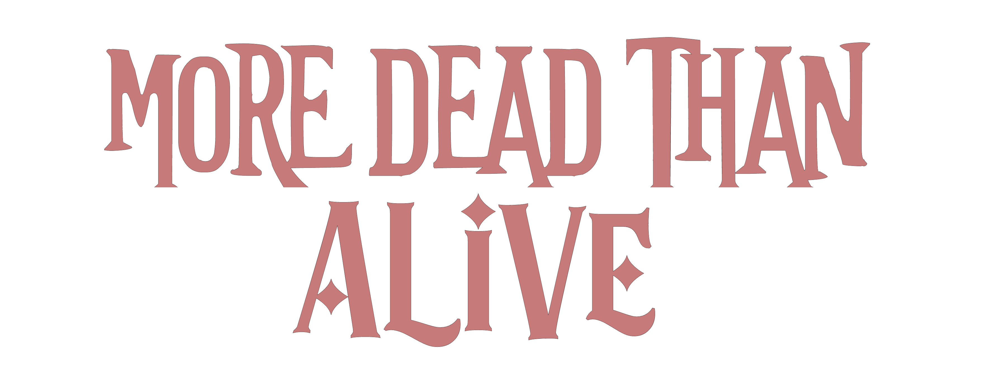

“No todos los monstruos nacen de la oscuridad. Algunos son creados bajo la luz de la justicia.”
En un mundo donde el heroísmo se ha convertido en una institución regulada por la Torre del Héroe, la justicia ya no es una cuestión de moralidad, sino de conveniencia. Superhéroes, vigilantes y villanos luchan por el control de un sistema que se tambalea entre la esperanza y la opresión. Pero más allá de los reflectores, lejos de los aplausos del público, existe una guerra silenciosa que nunca aparecerá en los titulares.
La humanidad ya no es la única raza dominante. Entre ellos caminan los híbridos, seres con características de criaturas místicas, bestias elementales y entidades imposibles de catalogar. Más fuertes, más rápidos y, según la Torre del Héroe, demasiado peligrosos para coexistir.
Durante décadas, los híbridos han sido perseguidos, cazados y exterminados en nombre de la paz. A pesar de que la cacería ha sido prohibida, la discriminación no ha desaparecido. La única forma de sobrevivir es ocultarse, adaptarse o luchar.
El Héroe Escarlata, Monroe Kaiser, es el actual Héroe Número Uno y el rostro de la Torre del Héroe. Rígido, calculador y brutalmente eficiente, es el héroe perfecto para un mundo que prefiere la estabilidad sobre la compasión. Pero detrás de su imponente reputación se esconde un hombre roto, atrapado entre su deber y la realidad de un sistema corrupto.
Por otro lado, Alexis Nevadas, alias Ace, es un héroe carismático y enigmático, siempre rodeado de misterio. Su ascenso en la Torre del Héroe ha sido vertiginoso, pero su verdadera lealtad y motivaciones siguen siendo inciertas.
Más allá de la Torre del Héroe, en los márgenes de la sociedad, existen organizaciones clandestinas que han decidido tomar la justicia en sus propias manos. Desde grupos de resistencia como CRENA, hasta facciones desconocidas que mueven los hilos desde la oscuridad, el equilibrio entre el orden y el caos pende de un hilo.
Cuando la justicia se convierte en un arma y los héroes en ejecutores de un sistema defectuoso, la pregunta deja de ser “¿Quién es el villano?” y se convierte en “¿Quiénes sobrevivirán?”
Bienvenido a More Dead Than Alive. Aquí no existen los finales felices. Solo decisiones, sangre y un destino que nadie podrá evitar.